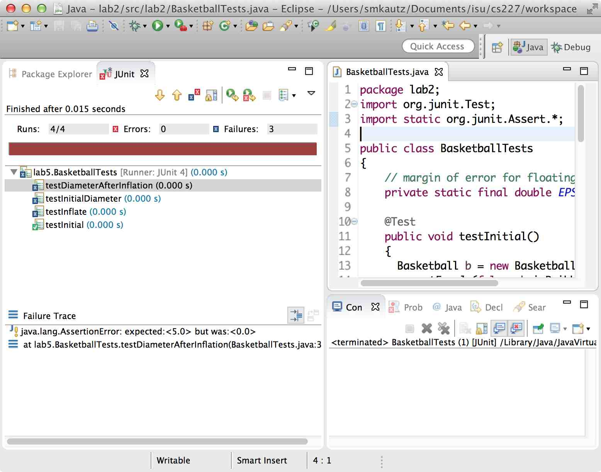

Creating and Running a JUnit Test
First, in your lab6 package, create a classBasketball with just the method stubs:
public class Basketball
{
public Basketball(double givenDiameter)
{
}
public boolean isDribbleable()
{
return false;
}
public double getDiameter()
{
return 0;
}
public double getCircumference()
{
return 0;
}
public void inflate()
{
}
}
Creating a JUnit test in an Eclipse project
Eclipse makes this easy for us.- In your lab6 package, create a new class called
BasketballTests. - Add JUnit 4 to the build path, just as you have done for running a specchecker. (Right click on the project, select Build Path, and choose Add Libraries. Select JUnit and click Next. Choose JUnit 4 from the drop-down list and click Finish.)
- Add the line
import org.junit.Test;after the package statement at the top of the file. - Add the line
import static org.junit.Assert.*;. - Now you can start writing test cases. Each test case
is just a
public voidmethod, with no parameters, that you have annotated with@Test.
BasketballTests on the previous page.
Running a JUnit test
Right-click on theBasketballTests class and select Run As --> JUnit Test.
That's it. You'll normally see a new pane appear on the left side of the workspace labeled "JUnit":

The red colored bar indicates that some test cases have failed. In the list underneath it, tests that failed have an "X" in a blue circle, and those that succeeded have a check mark in a green circle. If you click on any of the test cases in the list, the "Failure Trace" pane below shows you which assertion failed along with its expected and actual values. Double-clicking on the assertion message will take you to the test case that failed.
You can re-run the entire set of tests by right-clicking on the class name in the JUnit pane and selecting Run. You can also do the same for any individual test case in the list.